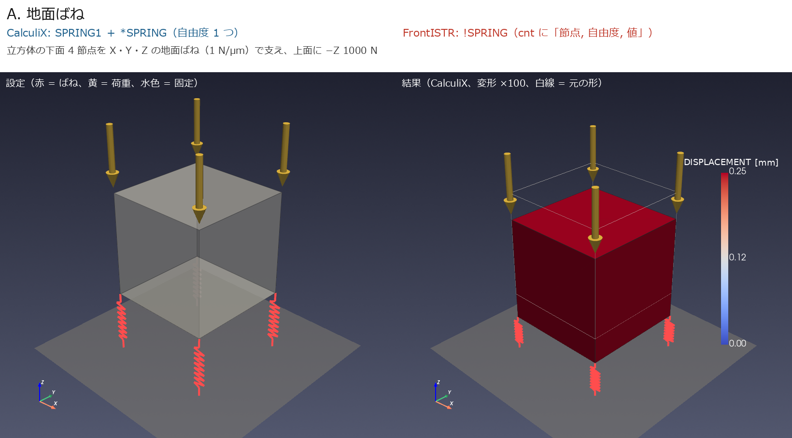
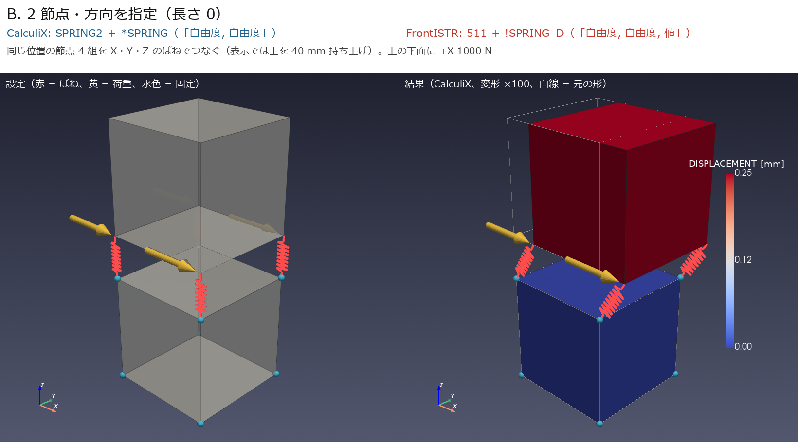
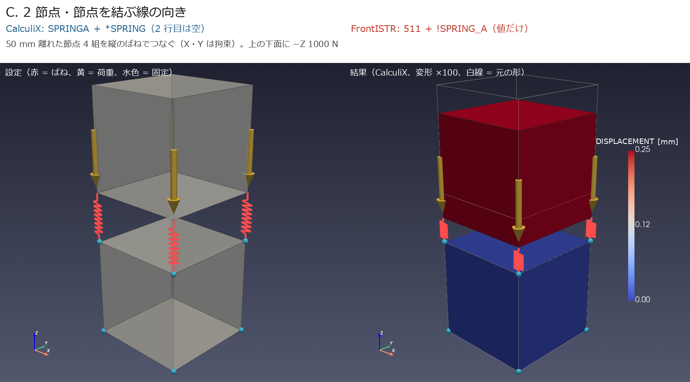
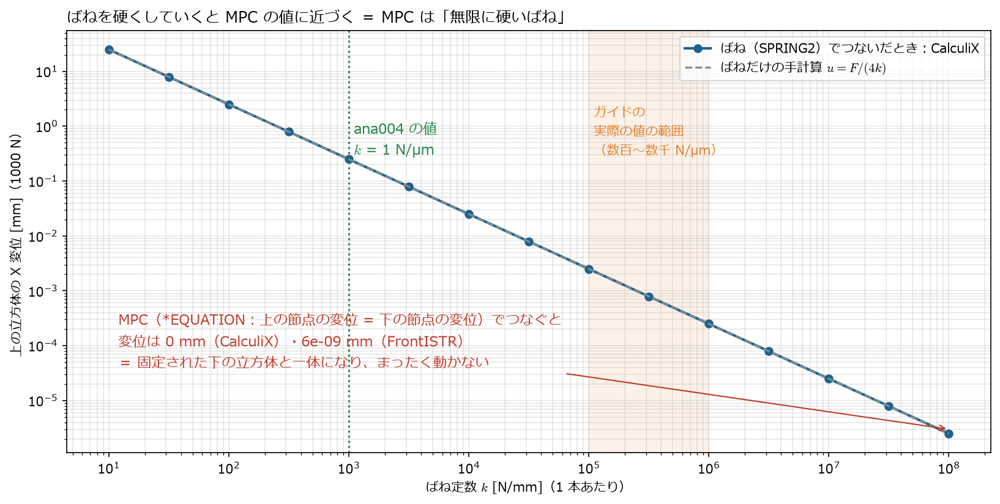

← docs 目次 ｜ ⌂ トップ ｜ ← 前: ana003_ばね接続モデルを自分で作る手順 ｜ 次: ana005_基礎ばねモデルの加減速と再生びびり分析 →
作成: 2026-11-07
ana001〜003 で使っている「ばね」の書き方を、いちばん小さいモデルで確かめる。 地面ばね・方向指定のばね（長さ 0）・軸方向のばね（長さあり）の 3 種類を、CalculiX と FrontISTR の両方で静解析し、手計算と比べる。
立方体（1 辺 100 mm、鋼 \(E = 210\) GPa、8 節点六面体 1 個）を、ばね定数 \(k = 1000\) N/mm（= 1 N/µm）のばね 4 本で支え、1000 N をかける。 手計算は \(u = F / (4k) = 0.25\) mm。
| ケース | ばね | 理論値 [mm] | CalculiX [mm] | FrontISTR [mm] |
|---|---|---|---|---|
| A_ground | 地面ばね（SPRING1 / !SPRING） | -0.2500 | -0.2500 | -0.2500 |
| B_spring2 | 2節点・方向指定（SPRING2 / 511+!SPRING_D） | 0.2500 | 0.2500 | 0.2500 |
| C_springa | 2節点・軸方向（SPRINGA / 511+!SPRING_A） | -0.2500 | -0.2500 | -0.2500 |
3 種類とも、2 つのソルバが手計算と一致した（FrontISTR は 5.9・6.0 とも同じ値。ref006）。



ParaView と同じ VTK（pyvista）で描画。左 = 設定、右 = CalculiX の結果（変形 100 倍）
入力ファイルの書き方（1 行ずつの意味）は ref005 の 1.1 節 にまとめた。
ana004 のばねは、特定の部品ではなく「ばねの書き方を確かめるための試験用のばね」（\(k\) = 1 N/µm は計算しやすい値）。 書き方としては、工作機械の次の部分に使うのと同じもの:
| ana004 のケース | 機械のどこに使う書き方か | 実際の値の目安（study/ref004） |
|---|---|---|
| A 地面ばね | 機械を床に載せるレベリングボルト・基礎 | 数百 N/µm 程度（床・アンカーによる） |
| B 方向指定・長さ 0 | リニアガイドのキャリッジ（上下・横）、ボールねじのナット（送り方向）、ボルト締結面。ana001〜003 で使っている書き方 | ガイド 1 個 数百〜数千 N/µm、ボールねじ 100〜500 N/µm |
| C 軸方向・長さあり | 斜めの支え、ばね・ダンパ部品、カウンタバランスのシリンダ | 部品のカタログ値 |
ばねは「2 点の間に、力に比例してずれを許す」もの。MPC（拘束式）は「2 点（や面と点）の動きを式で決めてしまう」もので、ずれは許さない。
ばね（SPRING2 /
511＋!SPRING_D） |
MPC（*EQUATION / !EQUATION） |
|
|---|---|---|
| 何を書くか | ばね定数 \(k\) | 変位どうしの関係式（例：\(u_{\mathrm{top}} - u_{\mathrm{bottom}} = 0\)） |
| 2 点のずれ | \(\Delta u = F / k\)（力に比例してずれる） | 式のとおり（\(= 0\) なら全くずれない） |
| 力学的な意味 | 柔らかさ（剛性）を入れる | 硬さ無限大の結合。剛性は入らない |
| 工作機械での役割 | ガイド・ボールねじ・ボルト結合の柔らかさそのもの | 面の多数の節点を代表点 1 つにまとめる（ana003）、部品の固着 |
| 組み合わせ | ― | 面 →（MPC）→ 代表点 —（ばね）— 代表点 ←（MPC）← 面（ana003 の方式） |
つまり、MPC だけでは柔らかさが入らない。ガイドの剛性を表すのは必ずばねで、MPC は「どの面のどの節点にばねの力を配るか」を決める道具。
ケース B の 4 本のばねの定数を \(10\)〜\(10^8\) N/mm まで変えて解き、さらにばねを外して MPC（上の節点の変位 = 下の節点の変位）でつないだものと比べた。

| つなぎ方 | 上の立方体の X 変位（1000 N） |
|---|---|
| ばね \(k\) = 1 N/µm（ana004 の値） | 0.25 mm |
| ばね \(k\) = 100 N/µm | 0.0025 mm |
| ばね \(k\) = 100,000 N/µm | 0.0000025 mm |
MPC（CalculiX *EQUATION） |
0（固定された下の立方体と一体） |
MPC（FrontISTR !EQUATION） |
\(6\times10^{-9}\) mm（数値誤差。実質 0） |
スクリプト: spring_vs_mpc.py、結果: spring_vs_mpc.md
| ファイル | 内容 |
|---|---|
| make_and_run.py | 3 ケースの入力作成 → CalculiX・FrontISTR 実行 → 手計算と照合（results/check.md） |
| render.py | 図と ParaView 用の VTU（results/*.vtu） |
A_ground/・B_spring2/・C_springa/ |
各ケースの
ccx/model.inp、fistr/model.msh・model.cnt・hecmw_ctrl.dat |
cd analysis/ana004_ccx_fistr_spring_types
~/opt/venv/bin/python make_and_run.py # 数秒
~/opt/venv/bin/python render.py
~/opt/venv/bin/python spring_vs_mpc.py # ばねと MPC の比較ParaView で見るときは results/B_spring2.vtu
などを開き、Warp By Vector（DISPLACEMENT、倍率
100）をかける。
← docs 目次 ｜ ⌂ トップ ｜ ← 前: ana003_ばね接続モデルを自分で作る手順 ｜ 次: ana005_基礎ばねモデルの加減速と再生びびり分析 →